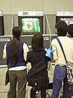
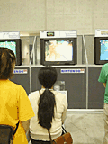

|
|||||||||||||
| ｜27日｜ ｜29日｜ | |||||||||||||
|
|
|
|
|||||||||||||
| ｜27日｜ ｜29日｜ | |||||||||||||
|
|
| NINTENDO 64 ソフトコーナー（海外版） |
| スペースワールド'99では、海外で発売予定の64ソフトも参考出展され、実際に遊んでみることができます。どのソフトも日本での発売は未定だけど、ユーザーの反応しだいでは、これらのソフトを日本でプレーできる日がくるかも!? |
| ●Army Men Sarge's Heroes (The 3DO Company) おもちゃの兵隊たちが繰り広げる迫力の戦闘アクションが見モノ。｢ストーリー性があるので1人でプレーしても楽しいゲームです。もちろん、対戦プレーも盛り上がりますよ｣とスタッフの方。幅広い年齢層にウケてるみたいで、同じ人が何度も遊びにくることも多いそうです。 |
| ●RAT ATTACK (The Learning Company)
ネズミとネコの追いかけっこが、とってもコミカルで可愛いゲーム。実際に遊んでみると見た目ほど簡単じゃないんだけど、やっぱりチビッコたちは喜んでプレーしているみたい。でも、日本人から見ると、ちょっとネコが凶悪そうに感じるんですけど？ |
| ●WWF Attitude (Acclaim Entertainment,Inc.)
モーションキャプチャーを使い、レスラーの華麗な動きをリアルに再現したプロレスゲーム。実在のプロレス団体、WWFに所属する実名のレスラーが、男女あわせて40人も登場する。というわけで、プレーしている人もプロレスや格闘技のファンが多いようです。 |
| ●Shadow Man (Acclaim Entertainment,Inc.) 生と死の世界を行き来するという、なんとなくオドロオドロしい画面の3Dアクションアドベンチャー。英語版ということでメッセージなんかも分からないし、どこで何をやればいいのか分からないはずなのに、みんなけっこうプレイしてました。難しいでしょ。 |
| ●Road Rash 64 (THQ,Inc.) 武器を使ってライバルを攻撃できるという、ちょっと過激なバイクレースゲーム。対戦プレイが楽しいですね。 |
| ●Destruction Derby 64 (THQ,Inc.) ほかの車を壊すのが目的という、こちらも過激なカーレース。家族で遊ぶ姿が目立ちました。｢こんなブッ壊しゲームを親子でプレーするなんて、ちょっと恐い気もしますけど、楽しそうだから僕もうれしいです｣とはCaryさんのお話。 |
| ●Michael Owen's World League Soccer 2000 (THQ,Inc.) 世界を舞台に戦う超リアルなサッカーゲーム。｢みんな夢中で遊んでくれてますけど、時間制限があるので途中で止めてもらわないといけないのが悲しいですね｣(Caryさん) ■THQのコーナーで見かけた面白い人！ THQのコーナーで説明をしてくれてるCary Strunkさん。どこで覚えたのか、とっても上手な日本語で何でも教えてくれます。でも、そのポーズはいったい･･･？ |
| ●Gauntlet Legends (Midway Home Entertainment,Inc.) 日本のアーケードでもおなじみのガントレット。その64オリジナル版がコレ。お客さんの年齢層は、ちょっと高めかな。 |
| ●NFL Blitz 2000 (Midway Home Entertainment,Inc.) アメリカでは有名なアメフトゲームの決定版。ルールを知らなくても、とにかく前にボールを送ればいいので、誰でも楽しめるとのこと。実際、小さなお子さんも夢中で遊んでました。 |
| ●Tonic Trouble (Ubi Soft Entertainmant,Inc.) アニメ調のCGがユニークなアクションアドベンチャー。結構難しいんだけど、見た目につられて女性ユーザーが多くプレイしてくれてるそうです。 |
| ●Rayman2 The Great Escape (Ubi Soft Entertainmant,Inc.) こちらもファンタジー風の可愛い画面がウケて、子供たちに人気。でも、やっぱりこれも難しいアクションゲームなのです。アメリカのゲーマーって、気が長いからね。 |
|
|